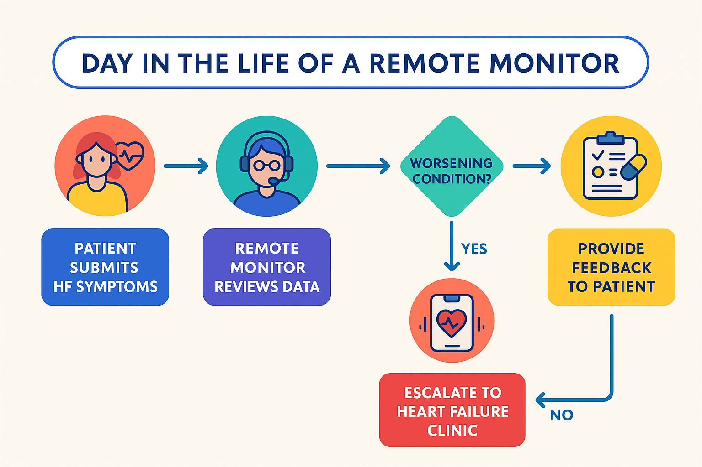
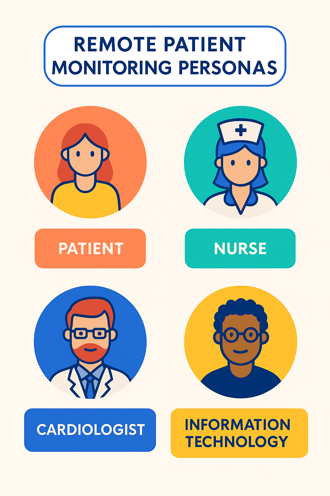
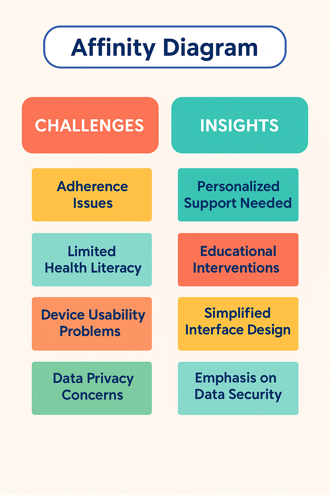

Remote Patient Monitoring & Telemedicine Usability Study
🧠 Problem Statement
Heart Failure (HF) is a growing healthcare burden with high readmission rates. Our project assessed the effectiveness of telemedicine tools in reducing hospital visits, improving patient engagement, and ensuring continuity of care from home.
🎯 Objectives
- Evaluate the usability and effectiveness of remote monitoring tools.
- Track how educational interventions and RPM impacted hospital admissions.
- Identify barriers and recommendations for telemedicine implementation.
👩⚕️ My Role
- Conducted contextual inquiries and usability testing with 22 student pharmacists.
- Analyzed data from 64 heart failure patients linked to Lima Memorial HF Clinic.
- Extracted insights using observations, interview data, and affinity diagrams.
- Created visual flowcharts and personas to map user behavior and system interaction.
🔧 Tools & Technologies
Citrix Gateway, ECW Live, Meditech EHR, Usability Testing, Affinity Diagrams, Personas, Storyboards, Qualitative Data Analysis
📊 Key Results
- 25% reduction in expected hospital readmissions within 90–120 days.
- Improved medication adherence and follow-up appointment compliance.
- Identified barriers such as internet access and system login issues.
🖼️ Visual Highlights
1. Day in the Life – RPM Workflow

2. Persona Snapshots

3. Prototype Usability Testing Chart

4. Affinity Diagram

📌 Recommendations
- Introduce two-factor authentication and automatic data backup.
- Add calendar scheduling and report generation tools.
- Consider developing a mobile version to expand accessibility.
🧾 Conclusion
This project validated the real-world impact of telemedicine in chronic disease management. It enhanced my understanding of healthcare data workflows, patient behavior, and the intersection of usability and clinical outcomes.